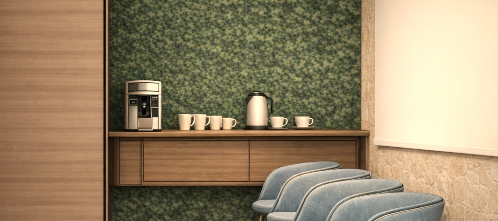
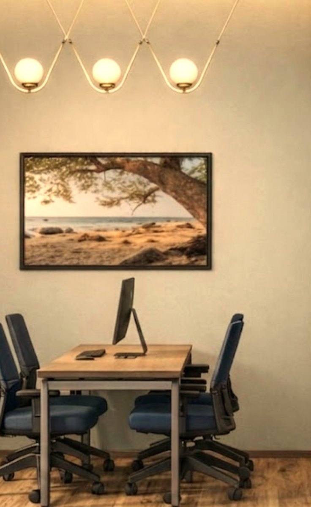
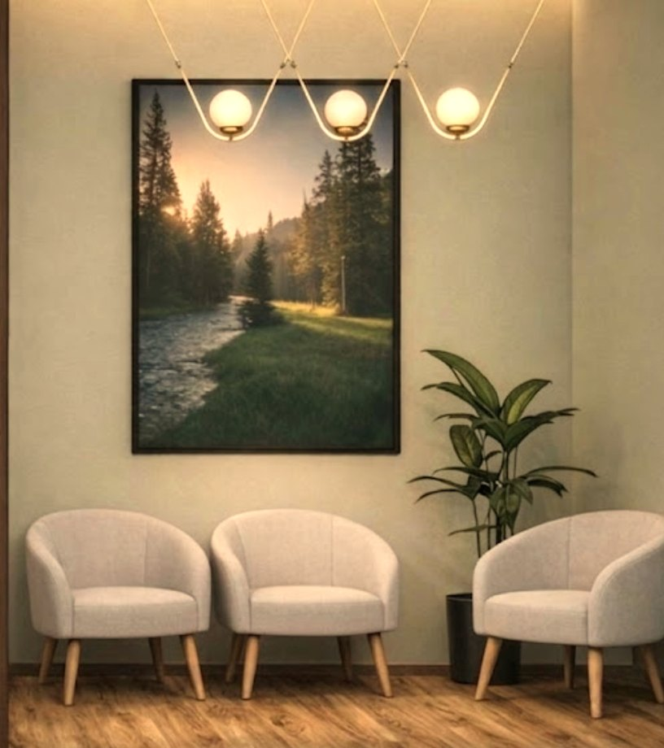
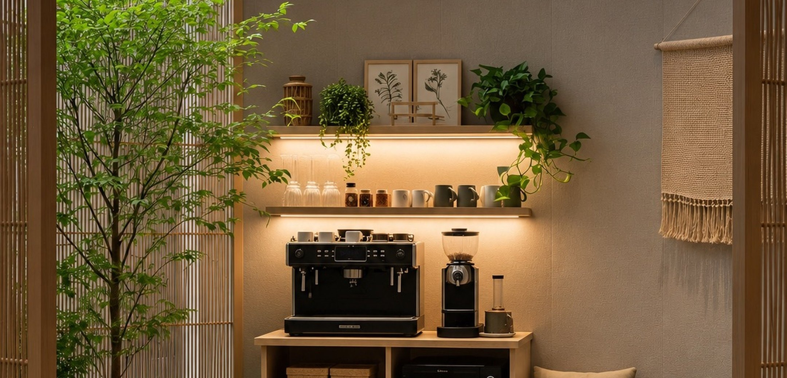

@fairhealth.br01/06
Desde 2009
O colaborador
no centro.
O Escritório do Cuidado é um espaço de atendimento médico e psicológico dentro da sua empresa. Ele tira do caminho a maior barreira ao cuidado: o tempo e o acesso. A proximidade aumenta a adesão. A adesão gera resultado.

@fairhealth.br02/06
2009 · Onde tudo começou
Antes de tratar,
escutar.
Num hospital, desenvolvemos o Escritório do Paciente. A primeira pergunta deixou de ser
“o que você tem?”
e passou a ser
“o que importa para você?”
Quem é ouvido confia. Quem confia se cuida.
@fairhealth.br03/06
O que aprendemos
Ser ouvido também
é cuidado.
34
→
cerca de
20
reclamações por mês, antes e depois do Escritório do Paciente.
Resultado apresentado em congresso internacional.
A escuta mudou a experiência. A experiência mudou o cuidado.
Conhece quem cuida das pessoas na sua empresa?
Mande este post para essa pessoa.
@fairhealth.br04/06
Com o tempo
Quem cuida
também se cansa.

Médicos, enfermeiros e, nas empresas, o RH e as lideranças passam o ano cuidando de todo mundo e quase nunca são cuidados.
Cuidado bom começa por quem cuida.
Na ciência da saúde, a ideia ganhou nome em 2014: Quadruple Aim.
@fairhealth.br05/06

E mais uma coisa
O cuidado
precisa
chegar.
Para quem está na linha de produção, uma consulta pode custar:
→
horas de deslocamento
→
fila na recepção
→
meio dia longe do trabalho
A distância adia o cuidado. E o cuidado adiado cobra o seu preço depois.

@fairhealth.br06/06
Hoje
E foi assim que nasceu o
Escritório do Cuidado.
Tudo o que aprendemos, a poucos passos de quem trabalha. Para que ninguém precise escolher entre o trabalho e a própria saúde.
Comente CUIDADO
e enviamos na DM como funciona o diagnóstico gratuito.
Na segunda: resultados reais, contados por quem criou o método.
 @fairhealth.br
@fairhealth.br